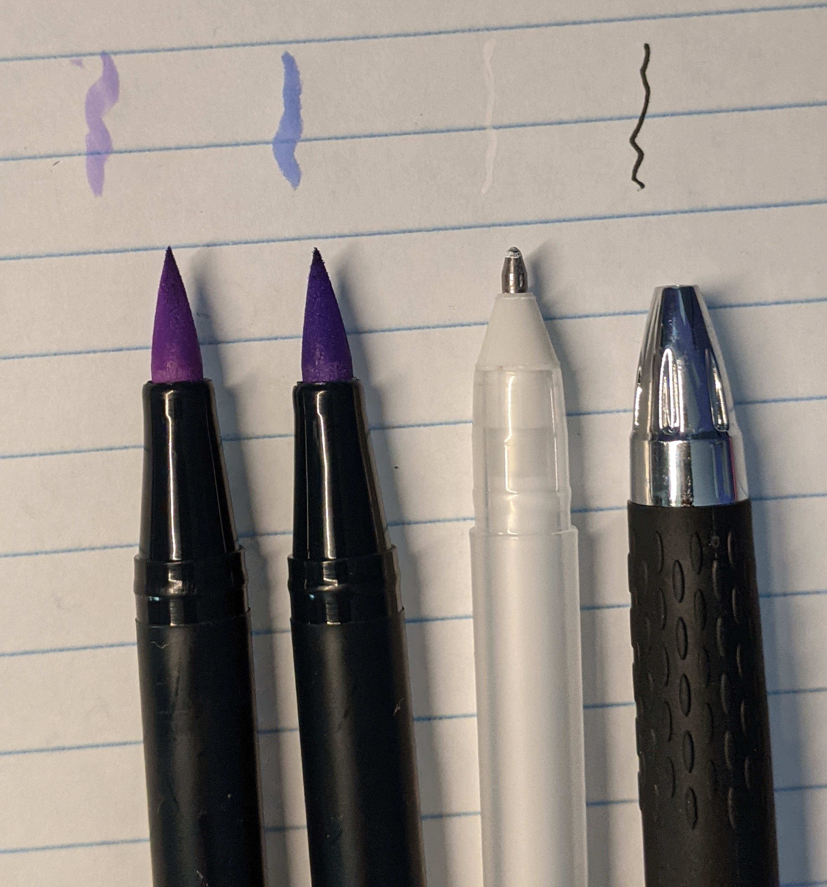
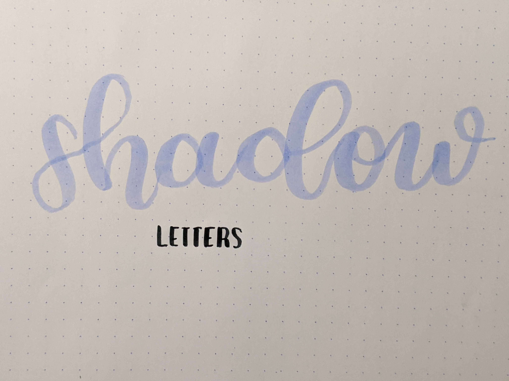
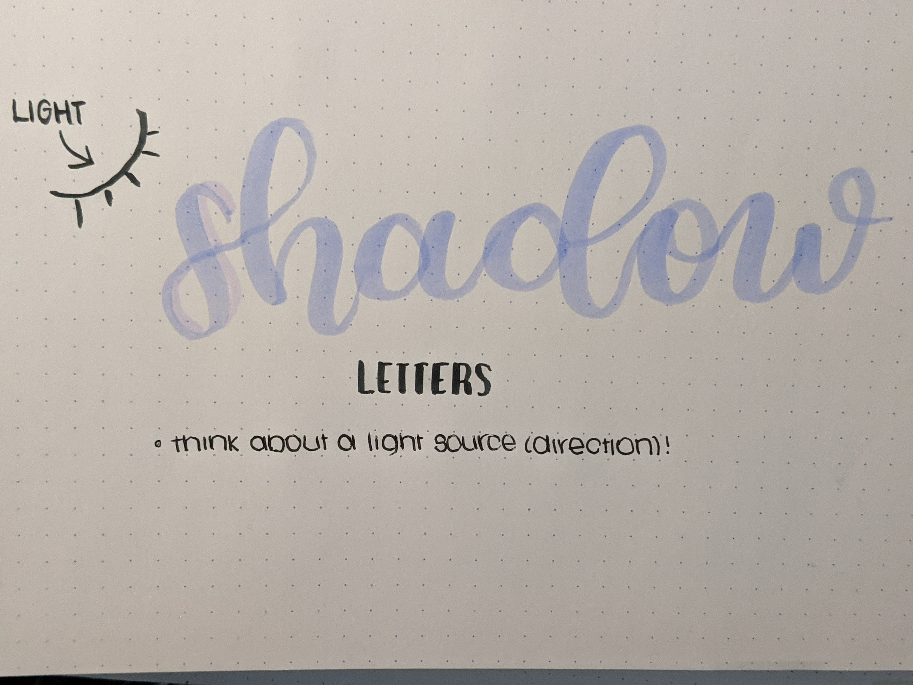
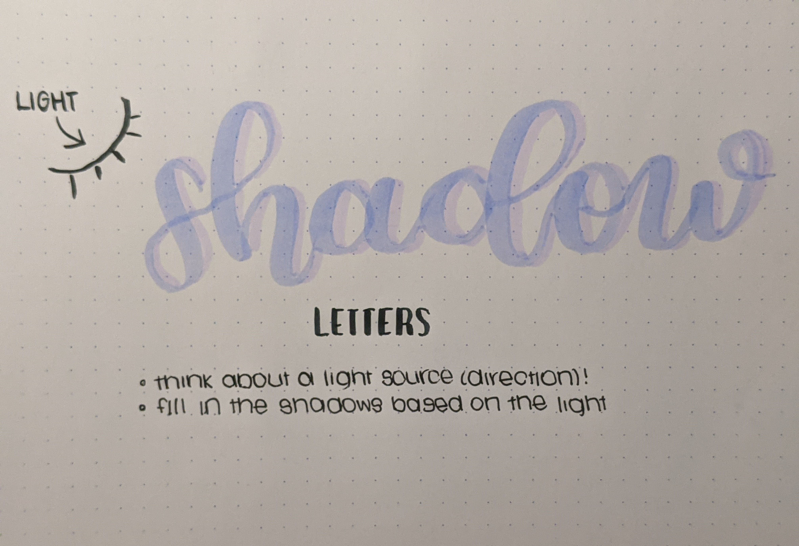
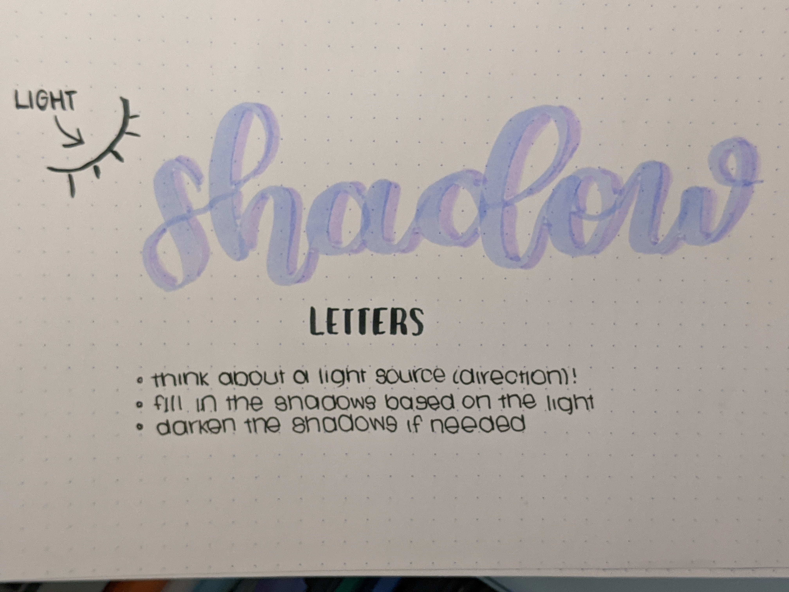
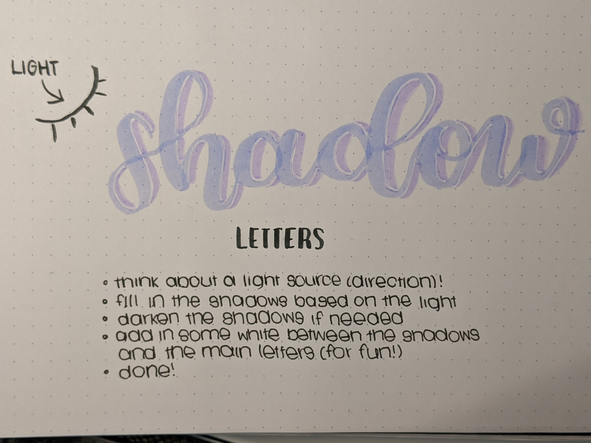

Welcome to my tutorial! Here, I'll be showing you how to make your letters look like they have shadows!
Here are the materials I'll be using for today:

The first two colored pens are Tombow Dual Brush Pens.
The next pen is a Gelly Roll Sakura pen, size 10. (optional)
Finally, for the last pen, I used the Uniball Signo pen.
For the first step, write some basic calligraphy:

Now, in order to actually create believable shadows, we need to envision a light source! Based on how the light source would hit the letters, we can draw in our shadows.

Above, I've drawn in my light source, and the first few shadows that result from the light hitting the letters. Now, we can go ahead and fill in the rest of the letters.

Now, these shadows are looking a little light. By going over them the same way we drew them the first time, we can darken our shadows if necessary!

We've darkened our shadows; now,for the last (optional) step. We can create the effect that the letters are lifting off the page, by using our Gelly Roll white pen!
Outline the boundaries between the shadow and the main letters to create this effect:

And we're done! Congratulations!